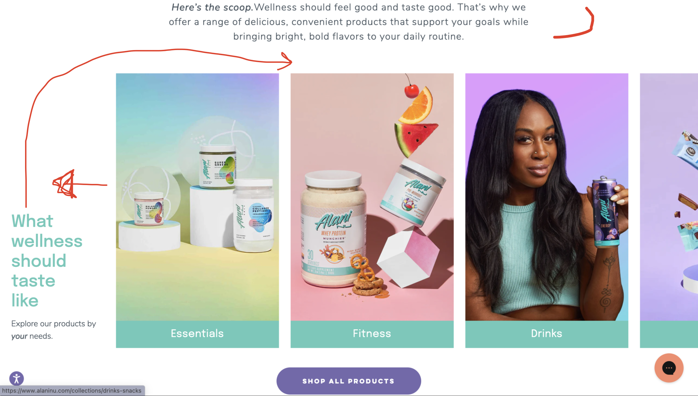
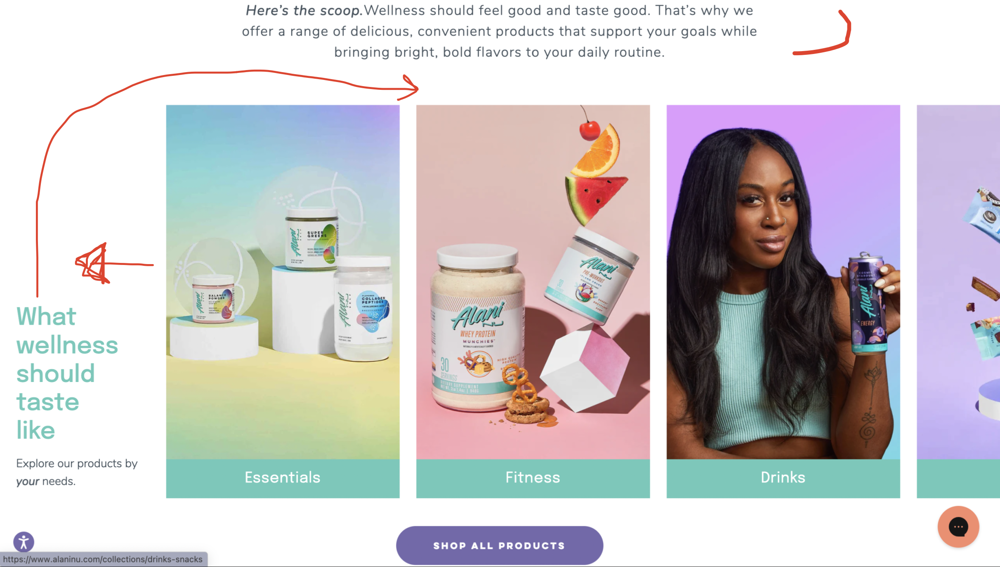

Free Stock photos by Vecteezy
Free Stock photos by Vecteezy
#FreeForm
Mockups
After reading the segment in which Steve Krug, the author, dissects the home pages of two
websites and offers
his recommendations, I felt motivated to undertake a similar assessment of the Alani Nu
website's homepage.
Screen shots of the home page with my own markups:
 


If I could redesign this homepage, I would first change the tagline. "Here for you and your taste buds" seems too broad. It leaves me asking, "in what way is this here for me?" I would change it to "Nourishing your wellness journey deliciously", which makes it clear that the website offers products related to health and wellness that are also tasty. I would also put the blurb about their mission below the tagline and remove the "Shop All" button as there is already one in the section below. The section below the hero section has a header labeled "What wellness should taste like" to the left of its content. At first, I thought there was a layout error with my browser, but I believe it is intentional. I would put the header above the content. I would also make the product "cards" smaller to eliminate the need to scroll horizontally, as there are only 5 "cards".
While the improvements made during this exercise will not be implemented on the website being analyzed, the process itself is a valuable learning experience that can enhance a software engineer's skill set, creativity, and understanding of user-centric design. It also contributes to a culture of continuous improvement and innovation within the field.
Krug, Steve., and Roger Black. Don’t Make Me Think! : a Common Sense Approach to Web Usability. Que, 2000.
https://www.alaninu.com/?keyword=alaninu&creative=652859403505&gclid=CjwKCAjwjaWoBhAmEiwAXz8DBbsYEzn7mHCqr8XtMn3_ZWBK0t8GSGShOwotaVXjEWOqJ6z-nWQNPhoCQ4MQAvD_BwE